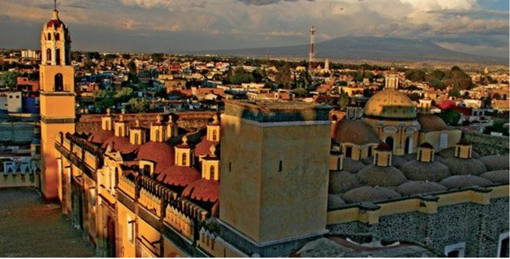

Cholula
Este Pueblo Mágico de Puebla te sorprenderá con los restos de una antigua (y enorme) pirámide prehispánica que, después de la Conquista, sirvió como sustento para el Templo Los Remedios.
Entre un gran templo prehispánico e iglesias coloniales
Cholula -formado por los poblados de San Andrés Cholula y San Pedro Cholula- recibe al visitante con una imagen única en México y el mundo: una estructura piramidal cubierta por follaje y coronada por una iglesia virreinal, custodiadas por el volcán Popocatépetl. En este Pueblo Mágico muy cercano a la ciudad de Puebla destacan sus múltiples templos de la época de la Colonia (tantos que, se dice, hay uno por cada día del año), así como su exquisita gastronomía, su fina talavera y el agradable ambiente de provincia.
Conoce más
Fue fundada por grupos toltecas que fueron exiliados de Tula cerca del año 500 a.C., lo que la convierte en una de las poblaciones vivas más antiguas de América. Posteriormente los cholultecas fueron tributarios de los mexicas, pero se distinguieron históricamente por su ánimo independiente.
Cholula también es conocida por ser escenario de uno de los episodios más cruentos de la Conquista. En 1519 las fuerzas de Hernán Cortés, que habían sido recibidas por los locales, cometieron la infame Matanza de Cholula pues sospechaban una emboscada. Se calcula que murieron hasta 6,000 cholultecas, la mayoría de ellos civiles.
Lo típico
Compra talavera en el Taller de Talavera de la Reyna, donde conservan las técnicas de trabajo del siglo XVI aplicadas a diseños contemporáneos. Las piezas van desde azulejos, platos y vajillas, hasta jarrones, floreros, macetas y cazuelas.
San Pedro Cholula se destaca por su alfarería de barro rojo, los árboles de la vida y las vajillas. Debido a las festividades religiosas a lo largo del año, Cholula también es conocida por la manufactura de artículos pirotécnicos como toritos, cascadas y castillos. Puedes conseguir estos productos en el Centro Artesanal, Cultural y Gastronómico Xelhua.
Sabías qué
Hay tantas iglesias y templos en Cholula que se dice que hay uno por cada día del año
Atractivos
Gran Pirámide de Cholula
Su nombre original en náhuatul es Tlachihualteptl, que significa “cerro hecho a mano”. Esta pirámide tiene la base más grande del mundo: 400 metros por lado. Sobre la pirámide se yergue el Santuario de la Virgen de los Remedios, cuya cúpula está cubierta por talavera típica de la región. La zona arqueológica cuenta con un Museo de Sitio, en que se dan pormenores sobre la historia de la pirámide y la iglesia a lo largo de tres salas. Te recomendamos acceder a la zona arqueológica a través de los misteriosos túneles.
Conozca másCapilla Real de Cholula
Es otro ejemplo de un lugar de culto católico construido sobre un recinto sagrado prehispánico. Esta edificación fue erigida con mano de obra indígena sobre lo que solía ser el templo de Quetzalcóatl. Cabe mencionar que la estructura sigue algunos preceptos de la cosmología prehispánica; las siete naves que van de oriente a poniente, por ejemplo, representan a Chicomecoatl, la Madre Tierra. La Fiesta del Pueblo, celebrada el domingo anterior a Pentecostés, sigue siendo en su honor. En la pila bautismal, que data del siglo XVI, aún puede apreciarse un calendario indígena.
Conozca másConvento de San Gabriel
Se ubica en el centro del poblado y es uno de los templos más antiguos del país, ya que se remonta a 1549. Frente a este complejo franciscano se encuentra la Parroquia de San Pedro Cholula, gran ejemplo de la arquitectura religiosa colonial, con una cúpula de estilo churrigueresco. En el interior se descubre una pintura de Cristóbal de Villalpando que muestra a San Miguel Arcángel con traje de guerrero.
Conozca másCasa del Caballero Águila
Nombrada así por el bajorrelieve que flanquea su entrada principal. Su planta baja data del siglo XVI y la alta del XVII. Actualmente aloja al Museo de la Ciudad de Cholula, con seis salas donde se exhiben alrededor de 2,300 piezas prehispánicas y virreinales. Vale la pena visitarlo no sólo por la obra expuesta, sino también porque se encuentra en el edificio civil hispano más antiguo de Cholula.
Hay un tranvía que puedes tomar en la Caseta de Atención Turística 1, en las esquinas de las avenidas Hidalgo y Miguel Alemán. El recorrido pasa por Tonanzintla, la Capilla Real y la plaza central.
Go somewhereAlrededores
Chipilo
Este poblado, de de evidente influencia italiana, se encuentra a aproximadamente media hora en auto (unos 18 kilómetros). Ahí podrás disfrutar de quesos, miel y carnes frías de producción artesanal.
Tonanzintla
El “lugar de nuestra madrecita”, se encuentra apenas a cuatro kilómetros al sur de Cholula. Vale la pena visitar la iglesia de Santa María Tonanzintla, una joya del barroco mexicano. En el interior del templo hay una cúpula repleta de figuras de niños con motivos indígenas como penachos, frutas, mazorcas y cuernos de la abundancia. La nave está decorada con chapa de oro. Además, este poblado ofrece una vista espectacular del volcán Popocatépetl, así como cielos llenos de estrellas (no por nada la localidad es sede del Observatorio Astrofísico Nacional de Tonanzintla).
Fiestas y eventos
Del 1 al 8 de septiembre se lleva a cabo la fiesta de la Virgen de los Remedios, la más importante para los cholultecas. Hay danzas rituales con grupos de concheros, ofrendas para la virgen y quema de panzones (grandes estructuras de cartón con forma humana). Tras la veneración a la virgen, los peregrinos realizan un trueque de productos como queso, frutas, ocote, incienso y nueces de la región. Es una manifestación cultural que data de tiempos prehispánicos y que vale la pena atestiguar.
Gastronomía/Dónde comer
Cholula cuenta con una buena oferta gastronómica que va desde las tiendas gourmet hasta restaurantes de cadenas internacionales. Pero nada como beber una cerveza y comer botanas típicas en la plaza principal. Entre los platillos de la región se encuentran la sopa cholulteca (a base de poro, tocino y pollo), la cecina con rajas, los gusanos conocidos como “cueclas” y las “orejas de elefante”, tortillas de grandes dimensiones rellenas con frijoles y coronadas con salsa, queso y cebolla.
No puedes irte sin desayunar en el mercado. Los lugareños utilizan ingredientes frescos para preparar antojitos típicos como sopes y quesadillas, así como sin comer mole poblano.
- Ocho 30 (internacional) 3 Poniente No. 101-A.
- El Zapata (regional) 12 Oriente, esquina 2 Norte.
- La Lunita (regional) Av. Morelos Norte No. 419, esquina 6.
Dónde dormir
- Villas Arqueológicas
2 Poniente No. 601, San Andrés.
www.villasarquelogicas.com.mx - Estrella de Belem, Bed & Breakfast & Spa
2 Oriente No. 410, Centro, San Pedro.
www.estrelladebelem.com - Hotel Las Iglesias
7 Sur No. 501, San Pedro.
www.hotelasiglesias.com.mx
Cómo llegar
| # | Camión | Avión | Auto |
|---|---|---|---|
| Tiempo | 2 hrs | - | 1 hr 30 min |
| Costo | $700 | - | $500 |
| Corridas | 3 al día | - | - |